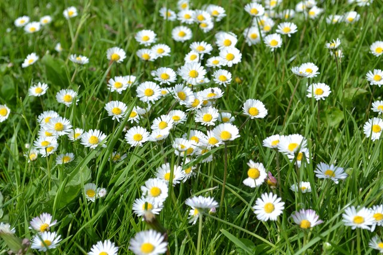

Oilpan（BlinkにC++ GCを導入するプロジェクト）が始まった当時、 オーフスの人たちと東京のぼくで開発をしていた。 オーフスはデンマークで2番めに大きな都市らしいが、 都会というよりは小さな地方都市という印象があった（そういうところのほうが好きだ）。 ライ麦パンとチーズがおいしかった。
朝、オフィスに通勤する前のバス停から撮った街の風景。デンマークの建物は茶色が濃い。
オーフスには、Den Gamle By (Old town)というところがあって、 昔のデンマークの街並みや暮らしが再現されている。
Googleオーフスのオフィス。 エンジニアリングだけのとても小さなオフィスで、家族的なほっこりした雰囲気が懐かしい。 お昼ごはんもケータリングで運ばれてくる。
ところで、オーフスは看板などはほとんどデンマーク語で書かれているのだが、 そのへんのパン屋さんのおばちゃんでも英語が通じる。 「どうして身の回りに英語があふれていないのに、みんな英語が上手なの？」と同僚に聞いたところ、 「デンマークは小さい国で、デンマーク語だけだと楽しめるコンテンツが少ないから、 ゲームとか映画とか英語のものをみんな観る。それで覚えるんだ。」とのこと。
逆の見方をすれば、すべてが日本語で完結する生活ができる日本はすごいと思った。
オーフスから電車で1時間半ほど、イェリング墳墓群という世界遺産があるというので行ってみた。 ところが、イェリングの駅は非常に小さな単線の田舎駅で、降りたはいいが世界遺産の看板も何もない。 なんとなく歩いていると、公園のようなところに出たが、どこに世界遺産があるのかよくわからない・・・ と思っていたところ、「この石碑が世界遺産です」という看板を発見。 デンマークの国家の起源を表す文字が彫られた石碑ということらしいが、正直、相当ながっかり名所だった。
ちなみに、世界遺産というのはあくまで歴史上意義のある事物を保全することを目的とするものであって、 観光目的のためのものではないので、こういうこともたまにある。
公園の丘から見える菜の花畑がきれいだった。
お花もきれい。

東京からオーフスまでは1日で辿り着けないので、コペンハーゲンに1泊することになる。
がっかり名所として有名な、人魚像。 あえて観光客をフレームに入れて、残念な感じを出してみたがどうだろうか。
カラフルな建物が軒を連ねるニューハウン。